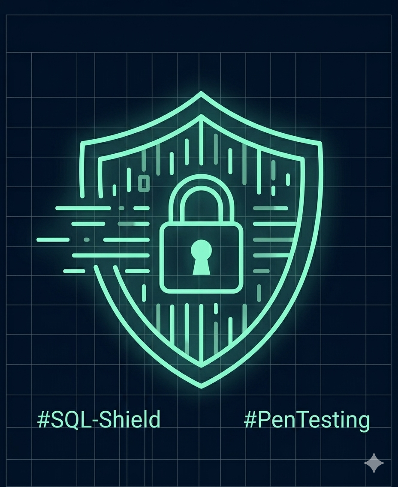

Operazione SafeBank
La sfida: Una nota startup nel settore dei pagamenti digitali ci ha contattato a seguito di ripetuti tentativi di intrusione. I loro sistemi erano vulnerabili ad attacchi di tipo SQL Injection, che mettevano a rischio i dati sensibili di migliaia di utenti durante le transazioni.
La nostra soluzione: Abbiamo condotto un'attività intensiva di Penetration Testing per mappare ogni falla del sistema. Successivamente, abbiamo implementato un Web Application Firewall (WAF) configurato su misura per filtrare il traffico malevolo e proteggere le API di pagamento.
Il risultato: Grazie al nostro intervento, la startup ha azzerato le vulnerabilità critiche. Oggi ShieldUp garantisce la sicurezza di oltre 50.000 transazioni mensili, assicurando al cliente una piattaforma solida e a prova di hacker.